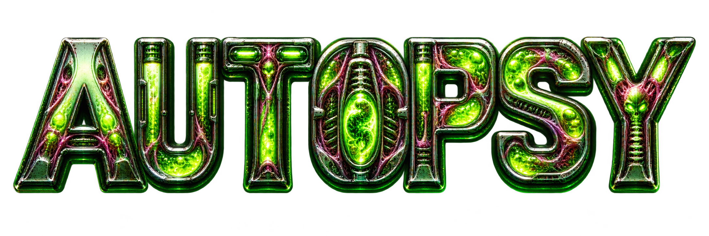
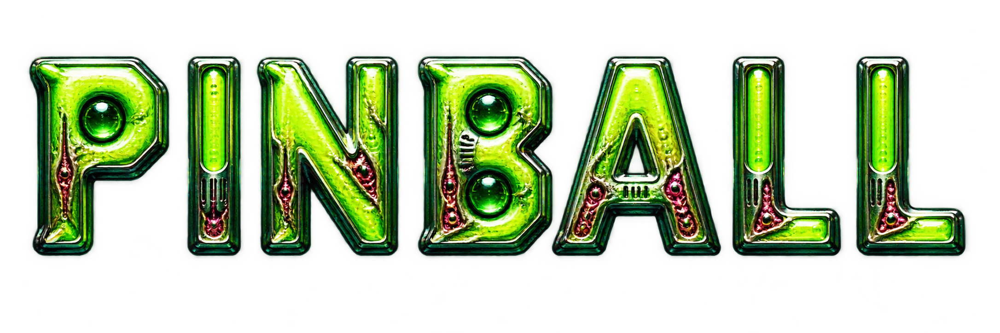

✳
AFTERLIFE ARCADE


Preparing the specimen…
TRY AGAIN ↗
✳
AFTERLIFE ARCADE
/ EXPERIMENT 001
SPECIMEN CONTAINED
SOUND ON
◖))
LIVE SPECIMEN
3D PERSPECTIVE ⇄
LEFT LEG
←
↓ BIOHAZARD DISPOSAL ↓
→
RIGHT LEG
← LEFT LEG
RIGHT LEG →